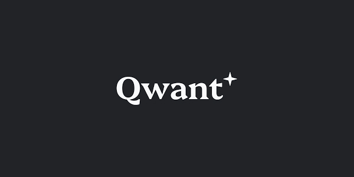

E ALLORA VAI NEL BOSCO.
Usiamo i tool che usano tutti: le stesse piattaforme, le stesse app e gli stessi servizi. Lo facciamo un po' perché è comodo e un po' perché sembra che l'unica alternativa sia andare a vivere nel bosco. Non è così.
ilBosco è una lista curata di alternative digitali per chi le sta cercando ma non sa da dove iniziare.
Notizie
-
Agenda Digitale
Perché la sovranità digitale rimane prioritaria in UE dopo le midterm Usa
Il Congresso Usa cambia colore, ma la dipendenza resta. Un’analisi che ricorda come la sovranità digitale non sia una questione di umori elettorali, ma di giurisdizione e controllo.
-
Gazzetta del Sud
Mistral Large 4, l'IA europea open-weight sfida Stati Uniti e Cina
Un modello europeo da mille miliardi di parametri, con i pesi aperti. I benchmark li dichiara Mistral, ma intanto un’azienda può installarlo sui propri server senza mandare dati fuori dall’Europa.
-

Il Post
Il motore di ricerca predefinito dei computer del Parlamento europeo non sarà più Google, ma Qwant
Un cambio di default che dice molto: le alternative europee esistono e qualcuno comincia a sceglierle sul serio, partendo da chi scrive le regole.
-
DDay.it
Abbandonare Google e Microsoft è possibile: le 4 alternative 100% europee che puntano su privacy e sovranità digitale
Quattro alternative europee, concrete e già usabili, per chi vuole iniziare a sganciarsi da Google e Microsoft. Non teoria: nomi su cui mettere le mani oggi.
-

Il Post
Vivere senza le tecnologie statunitensi
Si può davvero vivere senza le tecnologie americane? Il Post prova a rispondere sul serio, tra ciò che è già sostituibile e ciò che no. Più di quanto pensiamo, meno di quanto vorremmo.
-
Il Fatto Quotidiano
Big Tech: "Per l'Ue abbandonare la tecnologia Usa potrebbe essere impossibile". Ma Bruxelles vuole la fine della dipendenza
Quanto è davvero difficile per l'Europa staccarsi dalla tecnologia americana? Una fotografia onesta della dipendenza, e del perché vale la pena ridurla un pezzo alla volta.